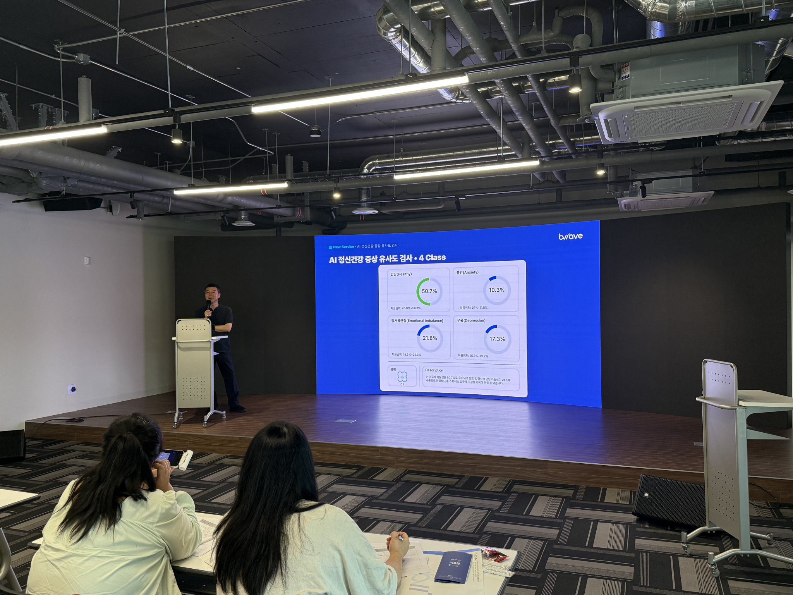

현장 발표
데이터로 설명하는 상담의 변화
생체신호 기반 평가의 과학적 근거와 상담 현장 적용 사례를 공유했습니다.

건강·불안·정서불균형·우울 4개 클래스로 정신건강 상태를 분석하는 신규 서비스를 직접 시연하고, 상담 현장에서의 활용 방안을 함께 논의했습니다.
현장 발표
생체신호 기반 평가의 과학적 근거와 상담 현장 적용 사례를 공유했습니다.
측정 시연
참가자들이 직접 측정하고 개인 리포트를 받아보는 체험 세션을 진행했습니다.
네트워킹
같은 고민을 가진 상담 전문가들이 모여 경험과 인사이트를 나눴습니다.